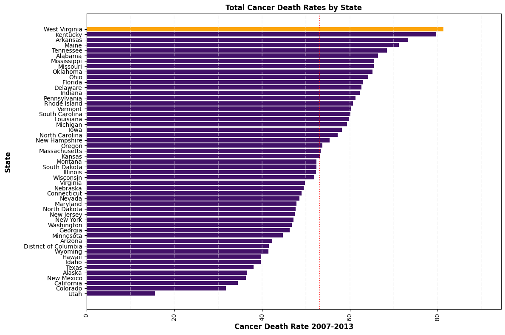
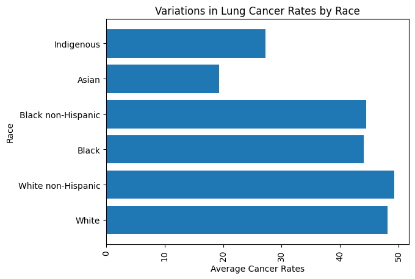
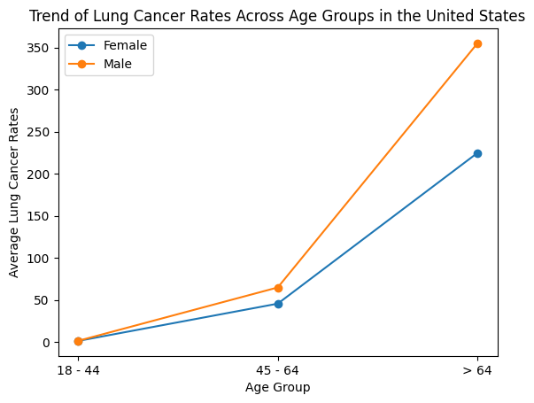
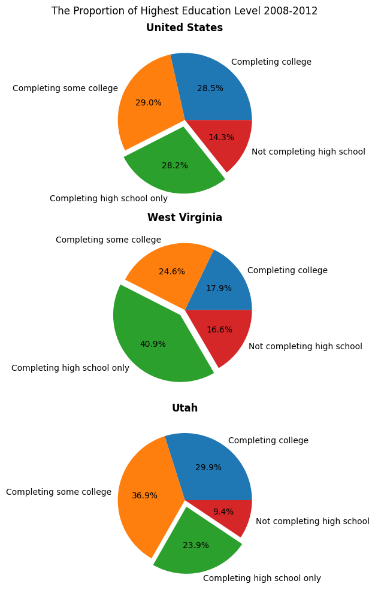
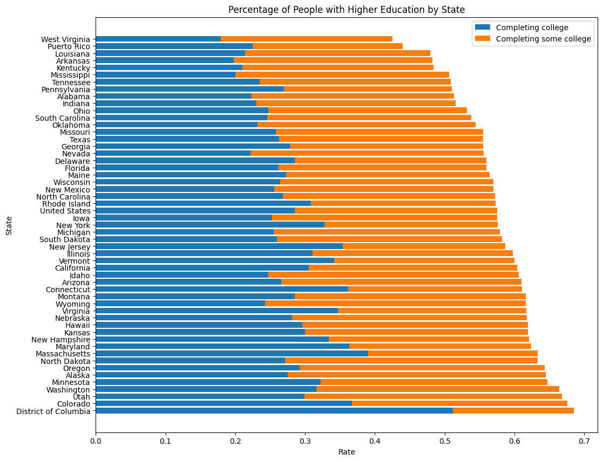

from bs4 import BeautifulSoup
import requests
from bs4 import BeautifulSoup
import pandas as pd
import matplotlib.pyplot as plt
import pandas as pd
import seaborn as sns
import numpy as np
import geopandas as gpd
# Retrieve the htmnl code of the CORGIS webpage
url = "https://corgis-edu.github.io/corgis/csv/"
response = requests.get(url)
html = response.text
status = response.status_code
soup = BeautifulSoup(html, "html.parser")
h3_contents = soup.find_all('h3')
h3_list = []
for h3_tag in h3_contents:
h3_list.append(h3_tag.text)
# reference: Assignment 4
def pdcorgis(a):
try:
dataset = a.lower()
dataset = dataset.replace(' ', '_')
dataset_url = f"https://corgis-edu.github.io/corgis/csv/{dataset}/"
response = requests.get(dataset_url)
html_code = response.text
status = response.status_code
soup = BeautifulSoup(html_code, 'html.parser')
links = soup.find_all('a')
download_link = None
for i in links:
if i.has_attr('download'):
download_link = i['href']
break
if download_link:
csv_url = f"https://corgis-edu.github.io/corgis/csv/{dataset}/{download_link}"
corgisdf = pd.read_csv(csv_url)
return corgisdf
else:
return None
except:
print("An exception ocurred")
# the dataframe we need for the research
df = pdcorgis("Cancer")
Introduction
This project aims to analyze the cancer death rate differences in Unites States by states.
Data Description
The data used in this study were retrieved from the CORGIS project, it is information about the rates of cancer deaths in each state is reported. The data shows the total rate as well as rates based on sex, age, and race. Rates are also shown for three specific kinds of cancer: breast cancer, colorectal cancer, and lung cancer. The data is collected from 2007-2013.
USDA Economic Research Service: https://data.ers.usda.gov/reports.aspx?ID=17829#P20da6056f1564446b1aeb037b0be4abe_4_244iT2
Motivations:
Cancer, a main health problem for us to care about. By examining cancer death rates based on sex, age, and race, researchers can gain insights into how different demographic groups may be affected by cancer. This can help identify populations that are particularly vulnerable or may require targeted interventions. To understand the risk factors, we may help those people who we care about to avoid cancer.
Main Research Questions:
- Are there significant differences in total cancer rates among states? Which states have the highest and lowest overall cancer death rates?
- Which types of cancer have the highest death rates overall, and how do these rates vary by state?
- How do cancer rates differ between males and females, and across different age groups?
- Are there variations in cancer rates based on different racial or ethnic groups? Are race and ethnicity risk factors for cancer?
- Are there any correlations between cancer death rates and other factors, such as socioeconomic status or access to healthcare?
Methods
This study was conducted based on data from CORGIS Dataset Project. To analyze data, investigate correlation between death rate and other factors, python and python library are used.
Library Imports & Read Data
Package is pre-installed for you if you access through binder.
Execute the following cell for important imports.
Dataset Overview
This section is for have a general overview and understanding for the dataset of this project.
print(df.info())
print(df.describe())
# printing the first 5 rows of dataset
df.head()<class 'pandas.core.frame.DataFrame'>
RangeIndex: 51 entries, 0 to 50
Data columns (total 75 columns):
# Column Non-Null Count Dtype
--- ------ -------------- -----
0 State 51 non-null object
1 Total.Rate 51 non-null float64
2 Total.Number 51 non-null float64
3 Total.Population 51 non-null float64
4 Rates.Age.< 18 51 non-null float64
5 Rates.Age.18-45 51 non-null float64
6 Rates.Age.45-64 51 non-null float64
7 Rates.Age.> 64 51 non-null float64
8 Rates.Age and Sex.< 18.Female 51 non-null float64
9 Rates.Age and Sex.< 18.Male 51 non-null float64
10 Rates.Age and Sex.18 - 45.Female 51 non-null float64
11 Rates.Age and Sex.18 - 45.Male 51 non-null float64
12 Rates.Age and Sex.45 - 64.Female 51 non-null float64
13 Rates.Age and Sex.45 - 64.Male 51 non-null float64
14 Rates.Age and Sex.> 64.Female 51 non-null float64
15 Rates.Age and Sex.> 64.Male 51 non-null float64
16 Rates.Race.White 51 non-null float64
17 Rates.Race.White non-Hispanic 51 non-null float64
18 Rates.Race.Black 51 non-null float64
19 Rates.Race.Asian 51 non-null float64
20 Rates.Race.Indigenous 51 non-null float64
21 Rates.Race and Sex.Female.White 51 non-null float64
22 Rates.Race and Sex.Female.White non-Hispanic 51 non-null float64
23 Rates.Race and Sex.Female.Black 51 non-null float64
24 Rates.Race and Sex.Female.Black non-Hispanic 51 non-null float64
25 Rates.Race and Sex.Female.Asian 51 non-null float64
26 Rates.Race and Sex.Female.Indigenous 51 non-null float64
27 Rates.Race and Sex.Male.White 51 non-null float64
28 Rates.Race and Sex.Male.White non-Hispanic 51 non-null float64
29 Rates.Race and Sex.Male.Black 51 non-null float64
30 Rates.Race and Sex.Male.Black non-Hispanic 51 non-null float64
31 Rates.Race and Sex.Male.Asian 51 non-null float64
32 Rates.Race and Sex.Male.Indigenous 51 non-null float64
33 Rates.Race.Hispanic 51 non-null float64
34 Rates.Race and Sex.Female.Hispanic 51 non-null float64
35 Rates.Race and Sex.Male.Hispanic 51 non-null float64
36 Types.Breast.Total 51 non-null float64
37 Types.Breast.Age.18 - 44 51 non-null float64
38 Types.Breast.Age.45 - 64 51 non-null float64
39 Types.Breast.Age.> 64 51 non-null float64
40 Types.Breast.Race.White 51 non-null float64
41 Types.Breast.Race.White non-Hispanic 51 non-null float64
42 Types.Breast.Race.Black 51 non-null float64
43 Types.Breast.Race.Black non-Hispanic 51 non-null float64
44 Types.Breast.Race.Asian 51 non-null float64
45 Types.Breast.Race.Indigenous 51 non-null float64
46 Types.Breast.Race.Hispanic 51 non-null float64
47 Types.Colorectal.Total 51 non-null float64
48 Types.Colorectal.Age and Sex.Female.18 - 44 51 non-null float64
49 Types.Colorectal.Age and Sex.Male.18 - 44 51 non-null float64
50 Types.Colorectal.Age and Sex.Female.45 - 64 51 non-null float64
51 Types.Colorectal.Age and Sex.Male.45 - 64 51 non-null float64
52 Types.Colorectal.Age and Sex.Female.> 64 51 non-null float64
53 Types.Colorectal.Age and Sex.Male.> 64 51 non-null float64
54 Types.Colorectal.Race.White 51 non-null float64
55 Types.Colorectal.Race.White non-Hispanic 51 non-null float64
56 Types.Colorectal.Race.Black 51 non-null float64
57 Types.Colorectal.Race.Black non-Hispanic 51 non-null float64
58 Types.Colorectal.Race.Asian 51 non-null float64
59 Types.Colorectal.Race.Indigenous 51 non-null float64
60 Types.Colorectal.Race.Hispanic 51 non-null float64
61 Types.Lung.Total 51 non-null float64
62 Types.Lung.Age and Sex.Female.18 - 44 51 non-null float64
63 Types.Lung.Age and Sex.Male.18 - 44 51 non-null float64
64 Types.Lung.Age and Sex.Female.45 - 64 51 non-null float64
65 Types.Lung.Age and Sex.Male.45 - 64 51 non-null float64
66 Types.Lung.Age and Sex.Female.> 64 51 non-null float64
67 Types.Lung.Age and Sex.Male.> 64 51 non-null float64
68 Types.Lung.Race.White 51 non-null float64
69 Types.Lung.Race.White non-Hispanic 51 non-null float64
70 Types.Lung.Race.Black 51 non-null float64
71 Types.Lung.Race.Black non-Hispanic 51 non-null float64
72 Types.Lung.Race.Asian 51 non-null float64
73 Types.Lung.Race.Indigenous 51 non-null float64
74 Types.Lung.Race.Hispanic 51 non-null float64
dtypes: float64(74), object(1)
memory usage: 30.0+ KB
None
Total.Rate Total.Number Total.Population Rates.Age.< 18 \
count 51.000000 51.000000 5.100000e+01 51.000000
mean 190.656863 78723.725490 4.240151e+07 2.119608
std 28.592155 80861.292676 4.784244e+07 0.502004
min 98.500000 6361.000000 3.931624e+06 0.000000
25% 176.500000 20631.000000 1.186991e+07 2.050000
50% 196.100000 54930.000000 3.034806e+07 2.200000
75% 210.750000 93328.000000 4.650326e+07 2.400000
max 254.600000 393980.000000 2.611357e+08 2.700000
Rates.Age.18-45 Rates.Age.45-64 Rates.Age.> 64 \
count 51.000000 51.000000 51.000000
mean 14.764706 197.576471 980.949020
std 2.204343 31.261040 75.189556
min 10.000000 132.300000 735.800000
25% 13.350000 175.000000 943.550000
50% 14.600000 189.300000 999.600000
75% 16.250000 217.850000 1031.450000
max 20.300000 263.900000 1110.200000
Rates.Age and Sex.< 18.Female Rates.Age and Sex.< 18.Male \
count 51.000000 51.000000
mean 1.727451 2.033333
std 0.846186 0.931808
min 0.000000 0.000000
25% 1.750000 2.050000
50% 2.000000 2.300000
75% 2.200000 2.500000
max 2.900000 3.200000
Rates.Age and Sex.18 - 45.Female ... \
count 51.000000 ...
mean 16.013725 ...
std 2.530219 ...
min 10.300000 ...
25% 14.150000 ...
50% 16.000000 ...
75% 17.700000 ...
max 22.800000 ...
Types.Lung.Age and Sex.Male.45 - 64 \
count 51.000000
mean 64.825490
std 21.288737
min 26.000000
25% 48.950000
50% 59.700000
75% 77.600000
max 112.600000
Types.Lung.Age and Sex.Female.> 64 Types.Lung.Age and Sex.Male.> 64 \
count 51.000000 51.000000
mean 224.668627 354.956863
std 33.313394 69.938477
min 92.700000 153.200000
25% 209.550000 313.300000
50% 225.800000 342.600000
75% 248.150000 391.000000
max 298.300000 519.100000
Types.Lung.Race.White Types.Lung.Race.White non-Hispanic \
count 51.000000 51.000000
mean 48.158824 49.341176
std 9.446125 9.274183
min 20.400000 20.600000
25% 42.750000 43.700000
50% 48.100000 48.800000
75% 54.500000 54.950000
max 71.500000 71.900000
Types.Lung.Race.Black Types.Lung.Race.Black non-Hispanic \
count 51.000000 51.000000
mean 44.056863 44.500000
std 20.517283 21.431435
min 0.000000 0.000000
25% 38.150000 39.950000
50% 47.000000 48.600000
75% 60.000000 60.350000
max 73.200000 73.600000
Types.Lung.Race.Asian Types.Lung.Race.Indigenous \
count 51.000000 51.000000
mean 19.323529 27.309804
std 10.427801 26.435236
min 0.000000 0.000000
25% 18.350000 4.450000
50% 22.200000 20.900000
75% 25.500000 44.250000
max 33.900000 87.500000
Types.Lung.Race.Hispanic
count 51.000000
mean 16.184314
std 8.041079
min 0.000000
25% 13.700000
50% 18.100000
75% 20.450000
max 35.200000
[8 rows x 74 columns]| State | Total.Rate | Total.Number | Total.Population | Rates.Age.< 18 | Rates.Age.18-45 | Rates.Age.45-64 | Rates.Age.> 64 | Rates.Age and Sex.< 18.Female | Rates.Age and Sex.< 18.Male | ... | Types.Lung.Age and Sex.Male.45 - 64 | Types.Lung.Age and Sex.Female.> 64 | Types.Lung.Age and Sex.Male.> 64 | Types.Lung.Race.White | Types.Lung.Race.White non-Hispanic | Types.Lung.Race.Black | Types.Lung.Race.Black non-Hispanic | Types.Lung.Race.Asian | Types.Lung.Race.Indigenous | Types.Lung.Race.Hispanic | |
|---|---|---|---|---|---|---|---|---|---|---|---|---|---|---|---|---|---|---|---|---|---|
| 0 | Alabama | 214.2 | 71529.0 | 33387205.0 | 2.0 | 18.5 | 244.7 | 1017.8 | 2.0 | 2.1 | ... | 102.9 | 221.7 | 457.4 | 59.9 | 60.4 | 52.6 | 52.8 | 23.0 | 22.9 | 14.8 |
| 1 | Alaska | 128.1 | 6361.0 | 4966180.0 | 1.7 | 11.8 | 170.9 | 965.2 | 0.0 | 0.0 | ... | 50.3 | 268.3 | 335.0 | 48.7 | 49.5 | 45.6 | 47.9 | 33.0 | 74.4 | 0.0 |
| 2 | Arizona | 165.6 | 74286.0 | 44845598.0 | 2.5 | 13.6 | 173.6 | 840.2 | 2.6 | 2.5 | ... | 47.0 | 191.9 | 275.8 | 39.5 | 42.2 | 38.2 | 40.4 | 21.3 | 11.1 | 21.6 |
| 3 | Arkansas | 223.9 | 45627.0 | 20382448.0 | 2.3 | 17.6 | 250.1 | 1048.3 | 2.6 | 2.0 | ... | 106.5 | 248.7 | 484.7 | 63.4 | 64.2 | 62.9 | 63.0 | 18.1 | 16.2 | 14.6 |
| 4 | California | 150.9 | 393980.0 | 261135696.0 | 2.6 | 13.7 | 163.7 | 902.4 | 2.4 | 2.8 | ... | 36.8 | 192.5 | 269.0 | 37.2 | 42.6 | 46.5 | 48.6 | 25.8 | 18.4 | 18.3 |
5 rows × 75 columns
We could see that there are mainly 4 age groups of metadata in this dataset. However, the metadata names are not canonical and not organized. For example, the data in the columns of Breast Cancer didn’t collect the data by sex, comparing to colorectal and lung cancer. And for all these three types of cancer doesn’t have the data for age below 18.
# getting the columns of the dataset
columns = list(df.columns)# examining missing values
print("Missing values distribution: ")
print(df.isnull().mean())Missing values distribution:
State 0.0
Total.Rate 0.0
Total.Number 0.0
Total.Population 0.0
Rates.Age.< 18 0.0
...
Types.Lung.Race.Black 0.0
Types.Lung.Race.Black non-Hispanic 0.0
Types.Lung.Race.Asian 0.0
Types.Lung.Race.Indigenous 0.0
Types.Lung.Race.Hispanic 0.0
Length: 75, dtype: float64A map would be helpful to
import plotly.express as px
# for using plotly, we need to convert full state name to their abbreviations in python since it does not recoginze full name of state
# reference for this:https://gist.github.com/rogerallen/1583593 (A Python Dictionary to translate US States to Two letter codes)
us_state_to_abbrev = {
"Alabama": "AL",
"Alaska": "AK",
"Arizona": "AZ",
"Arkansas": "AR",
"California": "CA",
"Colorado": "CO",
"Connecticut": "CT",
"Delaware": "DE",
"Florida": "FL",
"Georgia": "GA",
"Hawaii": "HI",
"Idaho": "ID",
"Illinois": "IL",
"Indiana": "IN",
"Iowa": "IA",
"Kansas": "KS",
"Kentucky": "KY",
"Louisiana": "LA",
"Maine": "ME",
"Maryland": "MD",
"Massachusetts": "MA",
"Michigan": "MI",
"Minnesota": "MN",
"Mississippi": "MS",
"Missouri": "MO",
"Montana": "MT",
"Nebraska": "NE",
"Nevada": "NV",
"New Hampshire": "NH",
"New Jersey": "NJ",
"New Mexico": "NM",
"New York": "NY",
"North Carolina": "NC",
"North Dakota": "ND",
"Ohio": "OH",
"Oklahoma": "OK",
"Oregon": "OR",
"Pennsylvania": "PA",
"Rhode Island": "RI",
"South Carolina": "SC",
"South Dakota": "SD",
"Tennessee": "TN",
"Texas": "TX",
"Utah": "UT",
"Vermont": "VT",
"Virginia": "VA",
"Washington": "WA",
"West Virginia": "WV",
"Wisconsin": "WI",
"Wyoming": "WY",
"District of Columbia": "DC",
"American Samoa": "AS",
"Guam": "GU",
"Northern Mariana Islands": "MP",
"Puerto Rico": "PR",
"United States Minor Outlying Islands": "UM",
"U.S. Virgin Islands": "VI",
}
df['Abbreviation'] = df['State'].map(us_state_to_abbrev)
# Create the choropleth map
fig = px.choropleth(df,
locations=df['Abbreviation'],
locationmode='USA-states', # set the location mode to 'country names' for USA states
color='Total.Rate', # the variable to be represented by color
hover_name='State', # the values to be displayed when hovering over each state
scope='usa', # set the scope to 'usa' for United States map
title='Cancer Death Rates by State 2007-2013')
# Show the map
fig.show()Geographically, the map helps identify regions with higher or lower cancer death rate levels, revealing patterns and contrasts.
First, we are going to use a pie chart to analysis the proportion of different types of cancer in the United States.
breast_total = df['Types.Breast.Total'].mean()
colorectal_total = df['Types.Colorectal.Total'].mean()
lung_total = df['Types.Lung.Total'].mean()
cancer_counts = [breast_total, colorectal_total, lung_total]
cancer_labels = ['Breast Cancer', 'Colorectal Cancer', 'Lung Cancer']
plt.pie(cancer_counts, labels=cancer_labels, autopct='%1.1f%%')
plt.title('The Proportion of Different Types of Cancer in United States')
plt.show()
We could see from above figures that, the lung cancer is the main cancer that lead to death among these three types of cancer in the Unite States. Luan Cancer is the leading cause of cancer death worldwide. An estimated 238,340 PEOPLE will be diagnosed with lung cancer in 2023 in the U.S.
We are firstly have data visualization to investigate if there are significant differences in total cancer rates among states. Use bar plot. This code assumes that the dataset includes the “State” column for the x-axis and “Total.Rate” column for the y-axis.
import matplotlib.pyplot as plt
import numpy as np
states = df["State"]
total_rates = df["Types.Lung.Total"]
# Sort the states and total_rates in descending order
sorted_indices = np.argsort(total_rates)
sorted_states = states[sorted_indices]
sorted_total_rates = total_rates[sorted_indices]
# Plot the bar chart
fig, ax = plt.subplots(figsize=(12, 8))
# Find the index of the highest bar
highest_index = np.argmax(sorted_total_rates)
# Set colors for bars
colors = ['#421168'] * len(sorted_states)
colors[highest_index] = '#fca50a'
ax.barh(sorted_states, sorted_total_rates, color=colors)
ax.set_xlabel("Cancer Death Rate 2007-2013", weight='bold', size=12)
ax.set_ylabel("State", labelpad=20, weight='bold', size=12)
ax.set_title("Total Cancer Death Rates by State", weight='bold', size=12)
vals = ax.get_xticks()
for tick in vals:
ax.axvline(x=tick, linestyle='dashed', alpha=0.4, color='#eeeeee', zorder=1)
plt.axvline(x=np.nanmean(total_rates), color='red', ls='dotted')
ax.tick_params(axis='x', rotation=90)
plt.tight_layout()
plt.show()
As above figure shown, Utah is the state which has the lowest cancer death rate. And West Virginia is the state with highest lung cancer death rate. The dot line means average cancer rate for states. We are going to choose West Virginia as the state sample for our research to investigate why its cancer rate is the highest. Next, we are going to display a line plot to analyze trends in cancer rates across age groups in west Virginia.
# Select the relevant columns for race-based analysis
race_columns = ['Rates.Race.White', 'Rates.Race.White non-Hispanic',
'Rates.Race.Black', 'Rates.Race.Asian',
'Rates.Race.Indigenous', 'Rates.Race.Hispanic']
race_names = ["White", "White non-Hispanic", "Black", "Black non-Hispanic", "Asian", "Indigenous"]
cancer_types = ['Lung', 'Breast', 'Colorectal']
# Create a new dataframe with race columns
race_df = df[race_columns]
cancer_type = "Lung"
subset_df = df[[f"Types.{cancer_type}.Race.{race}" for race in race_names]]
# Calculate the average cancer rates for each race
avg_rates = subset_df.mean()
# Plot the average cancer rates by race
plt.barh(race_names, avg_rates.values)
plt.ylabel('Race')
plt.xlabel('Average Cancer Rates')
plt.title('Variations in Lung Cancer Rates by Race')
plt.xticks(rotation=90)
plt.show()
Asian has the lowest average lung cancer rate among the racial group. What is the reason? Genetic, life style or other reasons?
Next, we are going to data visualize how the lung cancer rate change across age.
age_groups = ['18 - 44', '45 - 64', '> 64']
lung_rates_female = [
df['Types.Lung.Age and Sex.Female.18 - 44'].mean(),
df['Types.Lung.Age and Sex.Female.45 - 64'].mean(),
df['Types.Lung.Age and Sex.Female.> 64'].mean()
]
lung_rates_male = [
df['Types.Lung.Age and Sex.Male.18 - 44'].mean(),
df['Types.Lung.Age and Sex.Male.45 - 64'].mean(),
df['Types.Lung.Age and Sex.Male.> 64'].mean()
]
plt.plot(age_groups, lung_rates_female, marker='o', label='Female')
plt.plot(age_groups, lung_rates_male, marker='o', label='Male')
plt.xlabel('Age Group')
plt.ylabel('Average Lung Cancer Rates')
plt.title('Trend of Lung Cancer Rates Across Age Groups in the United States')
plt.legend()
plt.show()
From above figure, we could see no matter the line rapidly increase in the elderly group (> 64). It indicates that age supports the concept that lung cancer is a disease largely associated with aging; so the longer one lives, the greater that person’s risk for developing the disease.
Analysis
Results
Cancer doesn’t affect all ethnic groups the same.
Discussion
Lifestyle behaviors encompassing diet, physical exercise, sun exposure, smoking, and alcohol use and sexual practice behaviors Socioeconomic factors including education and income level, access to health insurance, and routine medical screening and services Genetic factors involving inherited genes and a family history of certain diseases Cultural factors involving practices, beliefs and in some instances mistrust of the health care system, which may prevent some from seeking preventive screening services Age, which supports the concept that cancer is a disease largely associated with aging; so the longer one lives, the greater that person’s risk for developing the disease
Due to the increasing aging of the population, the rapid development of industrialization and urbanization brought about by rapid economic growth and the deterioration of the environment, as well as the high smoking rate, the harm of lung cancer is gradually emerging.
Refereence & Source
International Agency for Research on Cancer. GLOBOCAN Lung Cancer Facts Sheet 2020.
American Cancer Society. Cancer Facts and Figures 2023. Atlanta; American Cancer Society: 2023.
df_edu=pd.read_csv('./Data/Education_level_2008_2012.csv')
df_edu.head()| State | Completing college | Completing some college | Completing high school only | Not completing high school | |
|---|---|---|---|---|---|
| 0 | United States | 0.285 | 0.290 | 0.282 | 0.143 |
| 1 | Alabama | 0.223 | 0.290 | 0.313 | 0.174 |
| 2 | Alaska | 0.275 | 0.370 | 0.271 | 0.084 |
| 3 | Arizona | 0.266 | 0.344 | 0.244 | 0.146 |
| 4 | Arkansas | 0.198 | 0.284 | 0.351 | 0.167 |
edu_labels = ['Completing college', 'Completing some college', 'Completing high school only', 'Not completing high school']
states = ['United States', 'West Virginia', 'Utah']
edu_data = {}
# use a dict to store the data
for state in states:
data = df_edu[df_edu['State'] == state]
comp_college = data['Completing college'].sum()
comp_some_college = data['Completing some college'].sum()
comp_high = data['Completing high school only'].sum()
not_comp_high = data['Not completing high school'].sum()
edu_counts = [comp_college, comp_some_college, comp_high, not_comp_high]
edu_data[state] = edu_counts
fig, axes = plt.subplots(nrows=len(states), ncols=1, figsize=(15, 10))
for i, state in enumerate(states):
ax = axes[i]
edu_counts = edu_data[state]
explode = [0 if label != 'Completing high school only' else 0.1 for label in edu_labels] # highlight the slides
ax.pie(edu_counts, labels=edu_labels, autopct='%1.1f%%', startangle=0, explode=explode)
ax.set_title(state, weight='bold')
fig.suptitle('The Proportion of Highest Education Level 2008-2012')
fig.tight_layout()
plt.show()
From above pie charts, we can see that the percent of ‘completing high school only’ and ‘not completing high school’ is higher than both United State (avg) and Utah (the state has lowest cancer death rate). To further prove this, a line chart would be need.
df_edu['Completing college + Completing some college'] = df_edu['Completing college'] + df_edu['Completing some college']
df_edu = df_edu.sort_values('Completing college + Completing some college', ascending = False)
# Set the figure size
plt.figure(figsize=(12, 10))
# Plot the stacked bar plot
plt.barh(df_edu['State'], df_edu['Completing college'], label='Completing college')
plt.barh(df_edu['State'], df_edu['Completing some college'],
left=df_edu['Completing college'], label='Completing some college')
# Add labels and title
plt.ylabel('State')
plt.xlabel('Rate')
plt.title('Percentage of People with Higher Education by State')
# Add legend
plt.legend()
# Show the plot
plt.show()
From above figure, we can see the percentage of people with higher education in West Virginia is the lowest state in United States.